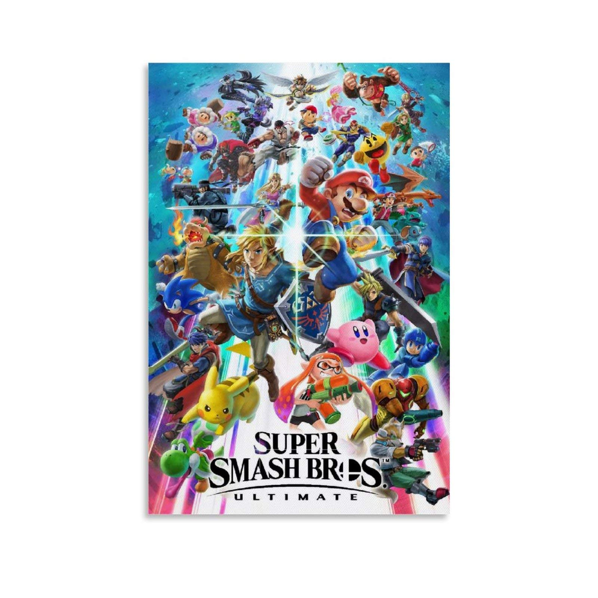
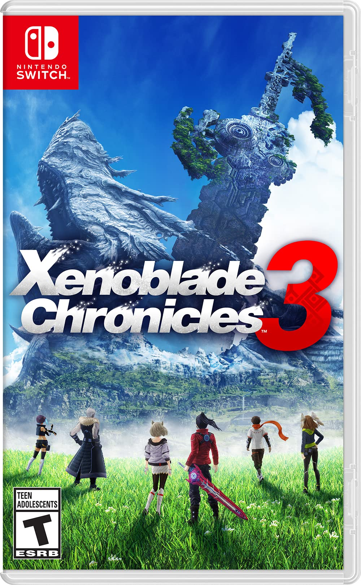
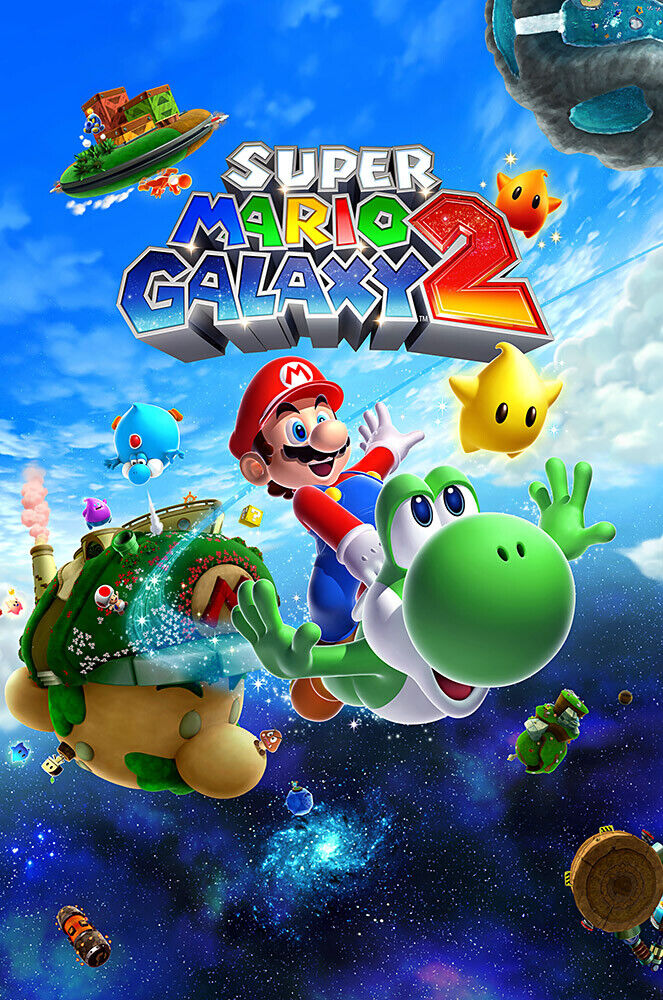

The Best Website You Will Ever Find

| Name: |
Brayden Wirts |
| Occupation: |
Student |
| Social Media: |
Twitter |
| University: |
UWGB |
About Me
I am a student at the University of Wisconsin - Green Bay (UWGB). Currently, I am undeclared for my major but business and math have always interested me. So I will probably go for those in the future. I'm taking computer science to see if I have any interest. I love to play video games and even do it competitively. I also adore bowling. My average peaked at over 215 per game when I bowled consistently. I may not do it as much anymore but it is still fun. My dad bowls a lot now so we compete with each other to see who is better. Even though I win most of the time, we both have a fantastic time. My family is pretty big. I have four brothers name, Michael, Noah, Anthony, and Clayton. The household can be pretty hectic but since most of us are older and out of the house, it gets really quiet and I love it. Back to video games, I run the Super Smash Bros tournaments at UWGB. Seeing everyone play the game is very fun and worth it.
Interests:
- Video Games 🎮
- Bowling 🎳
- Mathmatics (I love π)
- Walks 🚶
- Babysitting

Education:
- Bay Port High School
- University of Wisconsin - Green Bay
Some of My Favorite Video Games
| Video Game |
Boxart |
| Super Smash Bros. Ultimate |
 |
| Xenoblade Chronicles 3 |
 |
| Super Mario Galaxy 2 |
 |